창원 캐주얼 가족사진 — 같은 색을 입는 순간 가족은 한 편의 사진이 된다
2026-10-21 발행
창원 캐주얼 가족사진을 찍으러 오시는 분들이 요즘 부쩍 늘었습니다. 예전에는 가족사진이라 하면 정장과 드레스부터 떠올리셨는데, 요즘은 다릅니다. 아이들은 교복을 입고 오고, 어머니는 편한 니트를 입고 오십니다. 상남동 롯데빌딩 2층, 사랑이야기 스튜디오의 문을 열고 들어서는 가족들의 옷차림이 계절마다 조금씩 달라지는 것을 오래 지켜봤습니다.
캐주얼 가족사진이 좋은 이유는 단순합니다. 옷이 편하면 표정도 편해집니다. 정장은 어깨에 힘이 들어가고, 드레스는 걸음이 조심스러워집니다. 그런데 흰 티에 청바지를 입고 오면 아이들이 먼저 뛰어다닙니다. 그 뛰는 모습이 결국 그 집의 진짜 얼굴입니다. 오늘은 최근에 찍은 캐주얼 가족사진 열두 장을 보시면서, 어떤 점을 준비하면 좋은지 이야기해 보려 합니다.

첫 사진은 흰 시스루 커튼을 배경으로 한 여섯 식구입니다. 부부와 성인 자녀 넷이 나란히 섰습니다. 옷 색을 보세요. 아이보리, 베이지, 화이트. 서로 다른 옷인데 색이 같은 계열이라 마치 한 벌처럼 보입니다. 가족사진에서 색을 맞춘다는 것은 유니폼을 입는 일이 아닙니다. 같은 온도 안에 서는 일입니다.
색을 맞출 때 가장 쉬운 방법은 두 가지 색만 정하는 것입니다. 흰색과 베이지, 혹은 아이보리와 연분홍. 세 가지를 넘기면 사진이 산만해집니다. 옷장에 있는 옷으로 충분합니다. 굳이 새로 사지 않으셔도 됩니다. 다만 무늬는 한 사람만 넣으시길 권합니다. 체크무늬와 꽃무늬가 함께 있으면 사진이 바빠집니다.
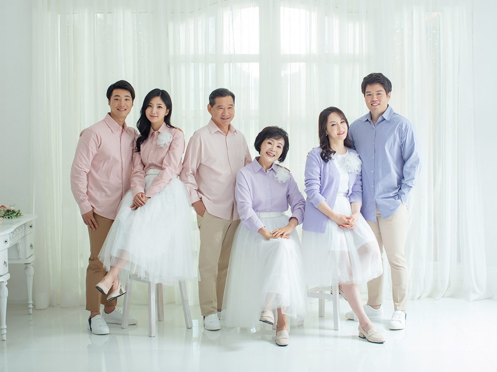
두 번째 사진은 같은 가족의 다른 컷입니다. 여기서는 여성 세 분이 의자에 앉고 남성 세 분이 뒤에 섰습니다. 가족사진이 밋밋해지는 가장 큰 이유가 everyone이 같은 높이에 서 있기 때문입니다. 앉고, 서고, 기대고. 높낮이가 생기면 사진에 층이 생깁니다. 그 층이 사진을 읽는 순서를 만들어 줍니다.
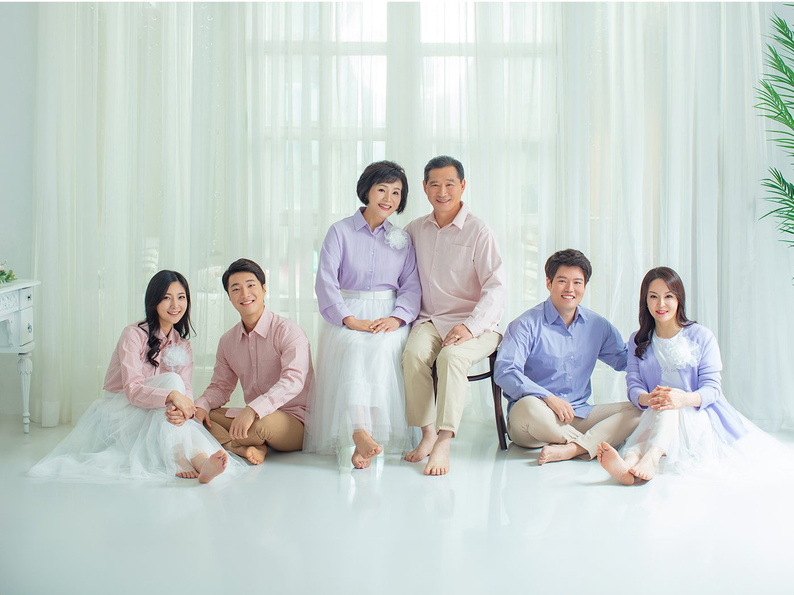
세 번째 컷은 신발을 벗고 찍었습니다. 흰 스커트 자락이 바닥에 부채처럼 펼쳐졌습니다. 처음에는 다들 망설이셨습니다. "발이 보이는데 괜찮을까요." 괜찮습니다. 오히려 좋습니다. 맨발은 사진에서 가장 편안한 신호입니다. 긴장한 사람의 발가락은 꼭 붙어 있고, 웃고 있는 사람의 발가락은 조금 벌어져 있습니다.
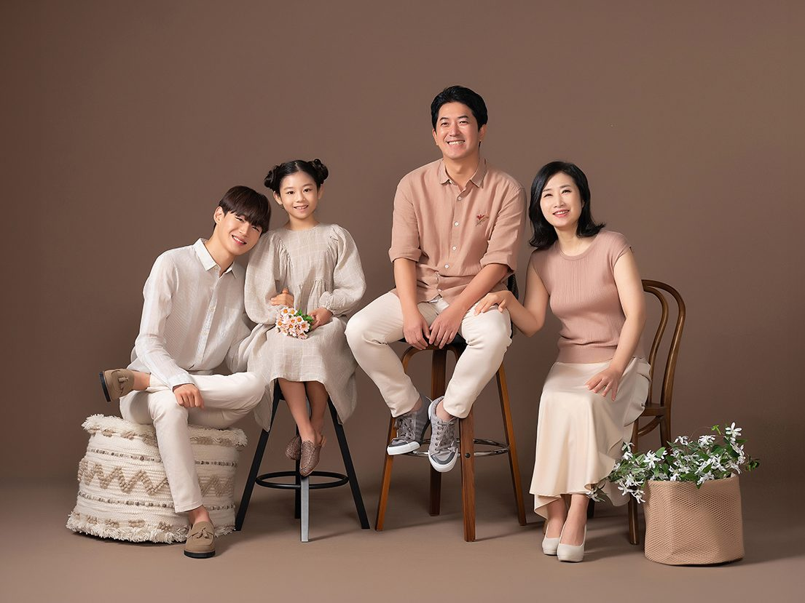
네 번째 사진은 네 식구입니다. 갈색 단색 배경 앞에서 부모와 청소년 아들, 어린 딸이 앉아 있습니다. 아이가 있는 가족사진은 순서가 중요합니다. 아이의 표정은 십 분을 넘기지 않습니다. 그래서 아이 컷을 먼저 찍습니다. 배경과 조명을 아이 기준으로 맞추고, 아이가 웃는 순간을 기다립니다. 어른들은 그 뒤에 자연스럽게 들어오십니다.
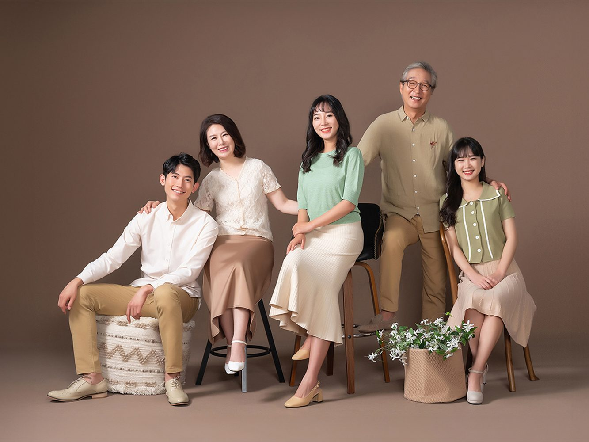
다섯 번째 사진은 다섯 식구입니다. 부부와 청년 자녀 셋. 여기서 눈여겨보실 곳은 손입니다. 아들의 어깨에 얹힌 아버지의 손, 어머니의 팔꿈치를 잡은 딸의 손. 손이 닿아 있으면 사진이 따뜻해집니다. 반대로 손이 떨어져 있으면 사이가 멀어 보입니다. 실제로 사이가 먼 것이 아니라, 사진이 그렇게 읽는 것입니다.
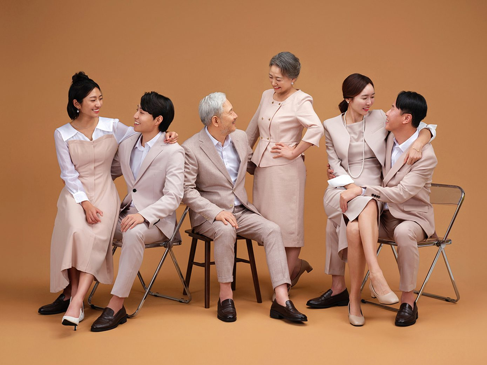
여섯 번째는 삼세대 가족입니다. 노부부, 그리고 두 쌍의 젊은 부부. 여섯 명이 한 프레임에 들어오면 구도가 어려워집니다. 이때는 원을 만듭니다. 서로를 마주 보게 하면 시선이 사진 안에서 순환합니다. 카메라만 바라보면 여섯 명이 각자 사진을 찍는 셈이 되지만, 서로를 보면 한 장의 사진이 됩니다.
삼세대 사진에서 가장 좋은 컷은 대개 마지막에 나옵니다. 처음에는 다들 카메라를 의식합니다. 삼십 분쯤 지나면 잊습니다. 그때 어르신이 손자를 보고 웃으십니다. 그 웃음은 지시해서 나오는 것이 아닙니다. 그래서 촬영 시간을 넉넉히 잡습니다. 두 시간이 짧게 느껴질 때가 많습니다.
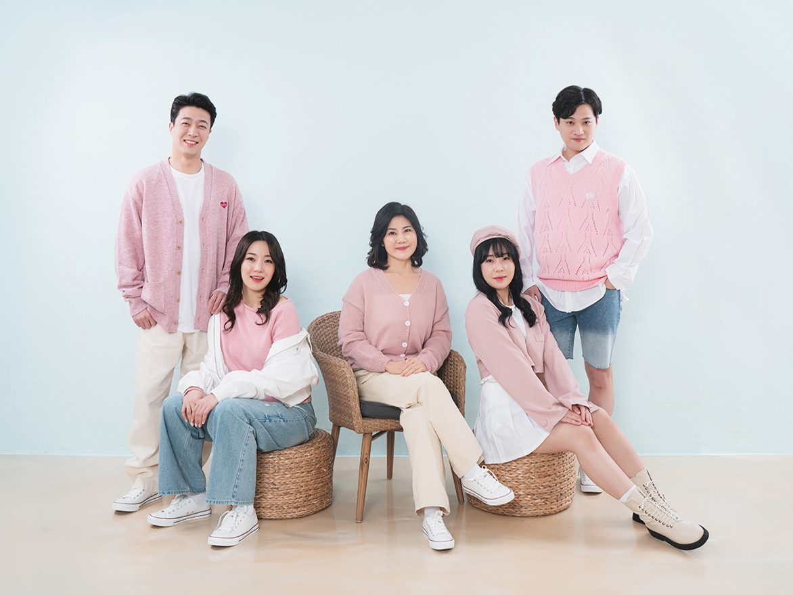
일곱 번째 컷부터는 배경이 바뀝니다. 하늘색 벽, 연노란 바닥. 캐주얼 가족사진에서 배경색은 표정만큼 중요합니다. 하늘색은 사진을 밝게 만들고, 아이가 있는 가족에게 특히 잘 맞습니다. 배경 하나를 바꾸는 데 오 분이면 충분합니다. 그 오 분이 사진의 분위기를 완전히 바꿔 놓습니다.
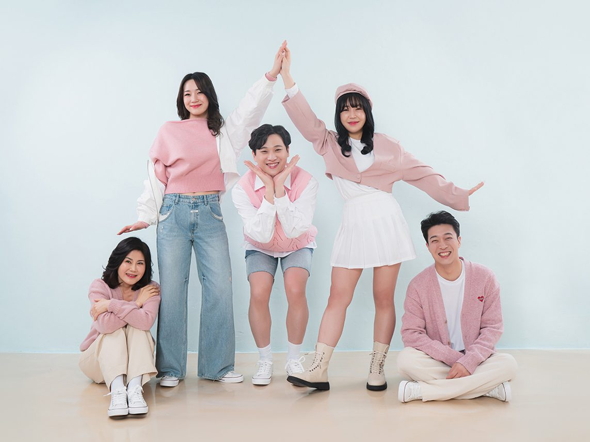
여덟 번째 컷은 조금 장난스럽습니다. 손을 맞잡고, 꽃받침을 만들고, 누군가는 발끝을 들었습니다. 가족사진에 이렇게 한 장은 꼭 있어야 합니다. 형식적인 사진 한 장, 장난스러운 사진 한 장. 나중에 액자에 걸리는 것은 형식적인 쪽이지만, 십 년 뒤에 웃음을 만드는 것은 장난스러운 쪽입니다.
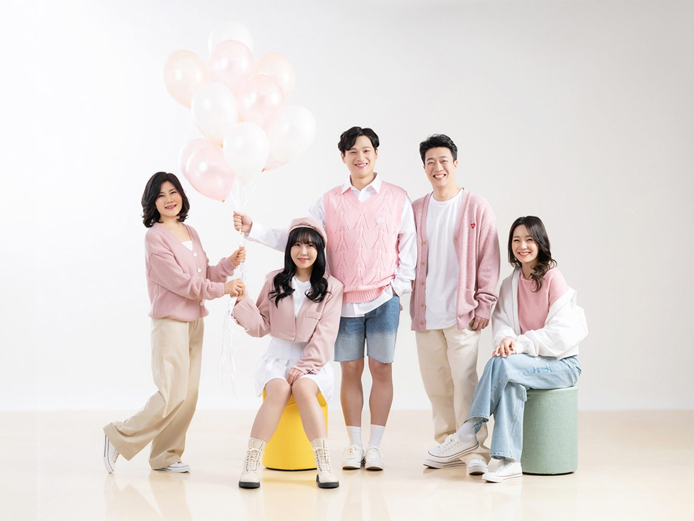
아홉 번째는 풍선을 들고 찍었습니다. 소품은 많이 쓰지 않습니다. 풍선 하나, 솜사탕 하나, 꽃 한 송이. 그 정도면 충분합니다. 소품이 많으면 사진이 소품 사진이 됩니다. 사진의 주인공은 사람이어야 합니다. 소품은 사람의 손에 들려 있을 때만 의미가 있습니다.
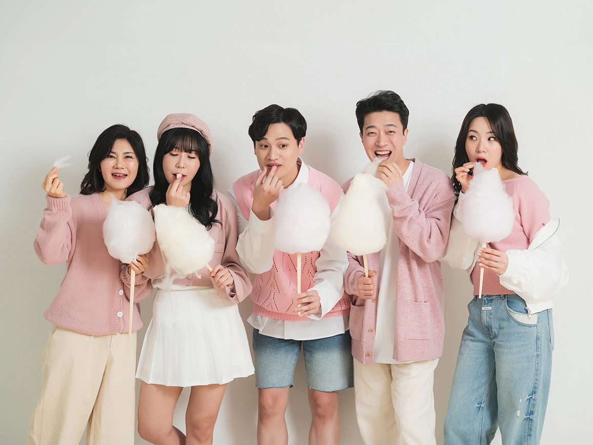
열 번째 컷은 솜사탕입니다. 이 사진에서 가장 좋은 부분은 솜사탕을 먹는 사람들의 입입니다. 누군가는 벌리고, 누군가는 웃음을 참고 있습니다. 먹는 동작은 표정을 강제로 풀어 줍니다. "웃어 주세요"라고 열 번 말하는 것보다 솜사탕 하나가 효과적입니다. 특히 사춘기 자녀가 있는 가족에게 권합니다.
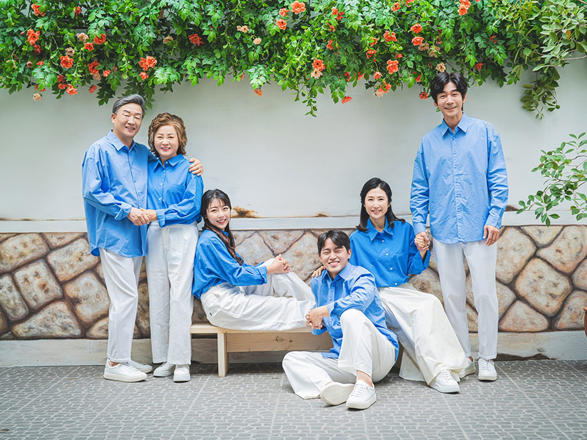
열한 번째 컷은 야외입니다. 상남동 스튜디오에는 꽃 덩굴이 드리운 벽과 돌담, 작은 벤치가 있습니다. 실내에서 두 시간을 보내면 표정이 조금 지칩니다. 그때 문을 열고 나가면 공기가 바뀌고, 사진도 바뀝니다. 야외 컷은 대개 마지막에 찍습니다. 마지막에 웃음이 한 번 더 터지기 때문입니다.
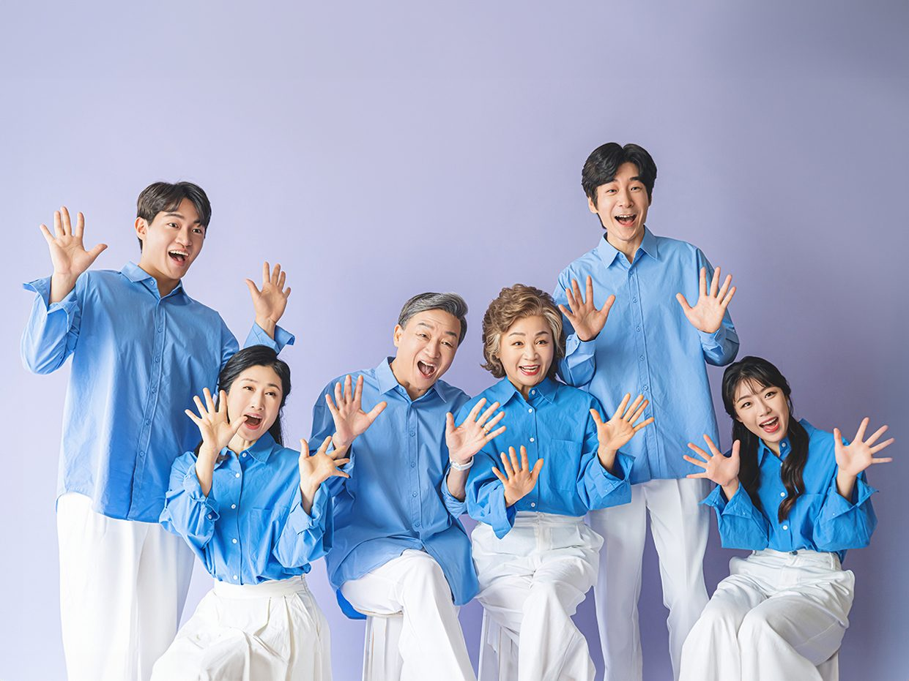
마지막은 보라색 배경입니다. 파란 셔츠와 흰 하의를 맞춰 입은 여섯 사람이 손바닥을 활짝 펴고 웃었습니다. 이 사진을 마지막에 찍은 이유는 간단합니다. 여기까지 오는 동안 다들 편해졌기 때문입니다. 첫 컷과 마지막 컷의 표정이 다른 것은 실력이 아니라 시간 덕분입니다.
촬영이 끝나면 사진을 고릅니다. 캐주얼 가족사진은 고르는 기준이 조금 다릅니다. 잘 나온 사진보다, 그 집답게 나온 사진을 고르시길 권합니다. 다 같이 웃은 사진보다 한 사람이 웃고 다른 사람이 그걸 보고 웃는 사진이 오래 남습니다.
고른 사진은 원목 액자에 넣습니다. 캐주얼 가족사진에는 밝은 오크가 잘 맞습니다. 거실 벽에 크게 걸 사진이라면 가로로 긴 컷이 좋고, 복도나 침실에는 세로 컷이 좋습니다. 액자 색을 고르실 때는 사진 속 옷 색과 배경색을 함께 보세요. 사진이 벽에서 떠 보이지 않게 하는 것이 액자의 역할입니다.
옷은 새로 사지 않으셔도 됩니다. 다만 촬영 전날 옷을 미리 펴 두시고, 가족끼리 사진을 한 장 찍어 보세요. 휴대폰으로 찍어 보면 어떤 색이 어울리는지 금방 아시게 됩니다. 궁금하시면 옷 사진을 미리 보내 주셔도 됩니다. 제가 색 조합을 봐 드립니다.
창원 캐주얼 가족사진은 상남동 롯데빌딩 2층에서 찍습니다. 건물 지하에 주차장이 있고, 엘리베이터에서 내리면 바로 문이 나옵니다. 촬영은 두 시간 남짓, 사진 고르는 시간은 따로 사십 분쯤입니다. 예약은 전화 055-287-8022 또는 카카오채널로 하시면 됩니다.
가족사진은 잘 찍으려고 애쓰는 사진이 아닙니다. 오늘 우리가 함께 있다는 사실을 남기는 사진입니다. 아이는 내년에 키가 크고, 어머니는 그다음 해에 머리색이 달라집니다. 그 변화는 사진으로만 확인됩니다. 그래서 매년 같은 계절에 찍으시길 권합니다. 같은 자리에서 찍은 사진을 나란히 놓고 보는 즐거움이 생깁니다.
사랑이야기 스튜디오 창원점 / 주소: 경남 창원시 성산구 원이대로 652, 상남동 롯데빌딩 2층 / 전화: 창원점 055-287-8022, 의령점 055-574-3706 / 홈페이지: lovestorykim.com / 인스타그램: @lovestorychangwon / 운영: 김작가
자주 묻는 질문
Q. 옷은 꼭 맞춰 입어야 하나요?
A. 두세 가지 색만 정하시면 충분합니다. 흰 상의에 진 청바지처럼 단순한 조합이 가장 안전하고, 무늬는 한 사람만 입으시는 편이 좋습니다. 옷 사진을 미리 보내 주시면 조합을 봐 드립니다.
Q. 아이부터 어르신까지 함께 찍을 수 있나요?
A. 가능합니다. 아기부터 아흔이 넘으신 어르신까지 찍어 왔습니다. 삼세대 여섯 분이 오시면 두 시간 남짓 걸리고, 중간에 아이 컷을 먼저 찍고 어르신은 의자에 앉아 편하게 계시도록 순서를 짭니다.
Q. 캐주얼과 정장 중 어느 쪽이 좋을까요?
A. 집에 걸 사진은 캐주얼이, 부모님 선물이나 기념일 사진은 세미정장이 잘 맞습니다. 두 벌을 준비하시면 한 번 촬영으로 두 가지 분위기를 남길 수 있습니다.

오시는 곳
사랑이야기창원점
- 주소 경남 창원시 성산구 원이대로 652, 상남동 롯데빌딩 2층
- 전화 055-287-8022
- 영업시간 오전 10:00 ~ 오후 7:00
- 예약 전화 상담 · 카카오톡 채널
- 주차 건물 지하 주차장
김작가사진이야기 의령
- 주소 경남 의령군 궁류면 청정로 1188
- 전화 055-574-3706
- 영업시간 오전 10:00 ~ 오후 7:00
- 예약 전화 상담 · 카카오톡 채널
- 주차 전용 주차장
이 글에 한마디
댓글창을 준비하고 있습니다. 그동안 궁금한 점은 카카오채널로 남겨 주시면 바로 답변드립니다.
카카오채널로 한마디 남기기